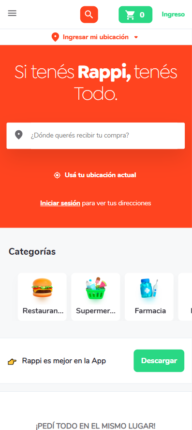
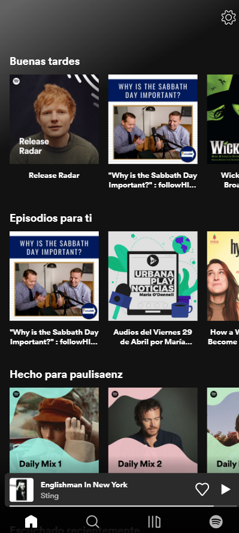
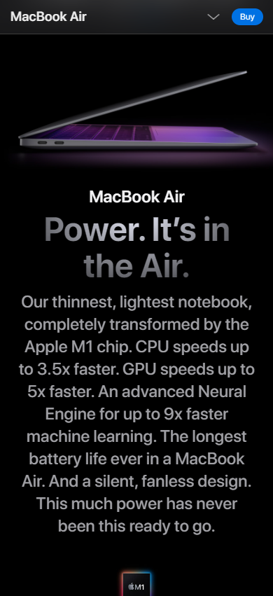

Contrast
Rappi
rappi.com.ar On Rappi's home page, we can see the high contrast between the white and the tomato red color. In addition, the organization utilizes the color green as an accent, which is the opposite of red and works perfectly.
Color is not the only eye-popper for this website: different font weights in the header make wonders with the word "Rappi" on a bold type, while the rest of the phrase is in a regular/light typeface. This way, the designers made the name of the brand pop.
The composition with high contrasts helps to stand out the most important things. For example, the green button at the bottom is for downloading the app, or the whiter ectangle in the middle of the red tomato background is for typing your address since Rappi is an app that helps you connect with restaurants to get your order.
Proximity
Web Spotify
open.spotify.com Spotify knows how to use proximity to make its home page works. Since it's all about music, it's essential to make a difference between playlists and podcasts or show together things that might be similar.
Here, we can see a connection with all the elements of the first row, but also catch there is a difference between those and the ones we can see in the second or third row. The space between rows is essential here. If this "white space" were the same than the one between the elements inside each row, there would probably be some confusion. Knowing that helps the user realize where to find something at a simple glance.
Visual Hierarchy
Apple
apple.com.ar Apple is always an example of good design. This time, we can easily understand why I chose this webpage to show the visual hierarchy principle.
Looking at the screenshot, we notice the MacBook Air's motto in larger font size.
The prestigious computer goes first if we read the image like it's familiar for most in the western hemisphere, reading from up to down, from left to right.
Right after the computer, we see its name. Smaller font than the catchphrase we will find later, but the color is brighter and has more contrast with the background. After the slogan, we encounter a description of the computer in a smaller, gray text.